Fablab tools
This page will contain some of the tools in the fablab.
Screwdrivers
Screwdrivers hele to tighten or loosen fasteners such as screws and are avaliable in many sizes and types for different screw profiles. Screw profiles include Phillips, slotted, Torx, hex and Robertson
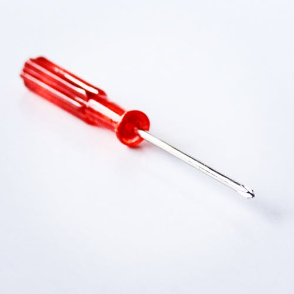Pliers
Pliers help to hold small objects, hot objects and objects in awkward, hard to reach areas where out hands cannot.
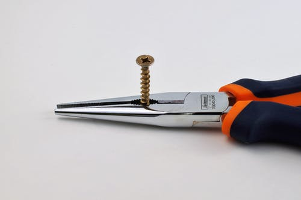Vice
A vice can be used to hold material while it is being worked on.

Files
Files can be used to enlarge holes, shape material and break sharp edges.
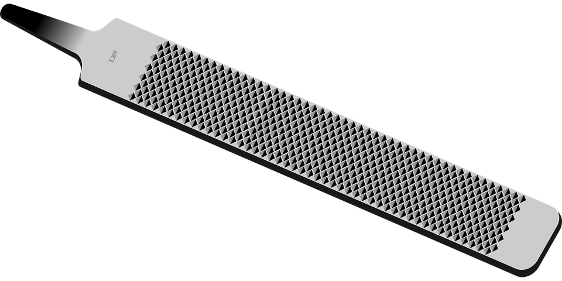Jigsaw
A jigsaw is a hand-held electric saw. It has a blade that moves in a reciprocating motion and can cut cruves in material.
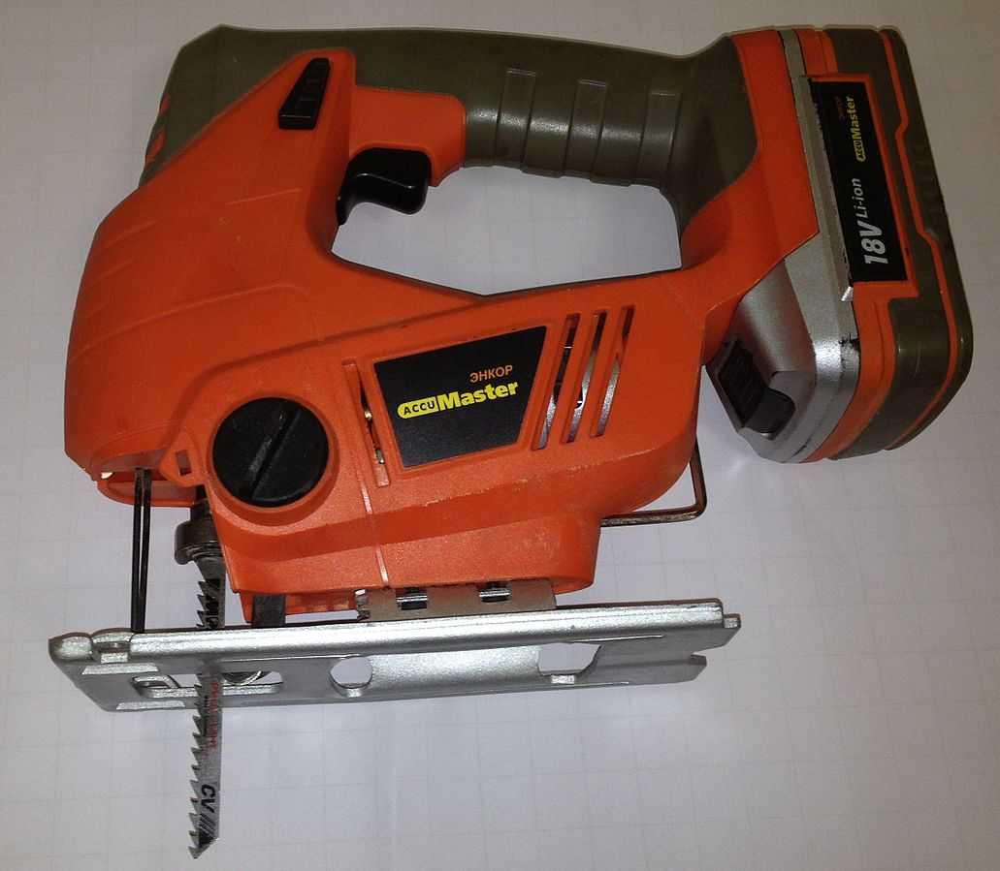Артём В., CC BY-SA 4.0 <https://creativecommons.org/licenses/by-sa/4.0>, via Wikimedia Commons
Power drill
A power drill helps to create holes of varing sizes in material.
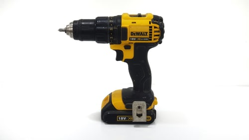Large format printer
A large format printer can be used to print large posters.
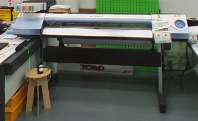Embroidery machine
An embroidery machine embroiders a pattern or text on to fabric. It is controlled by a computer.
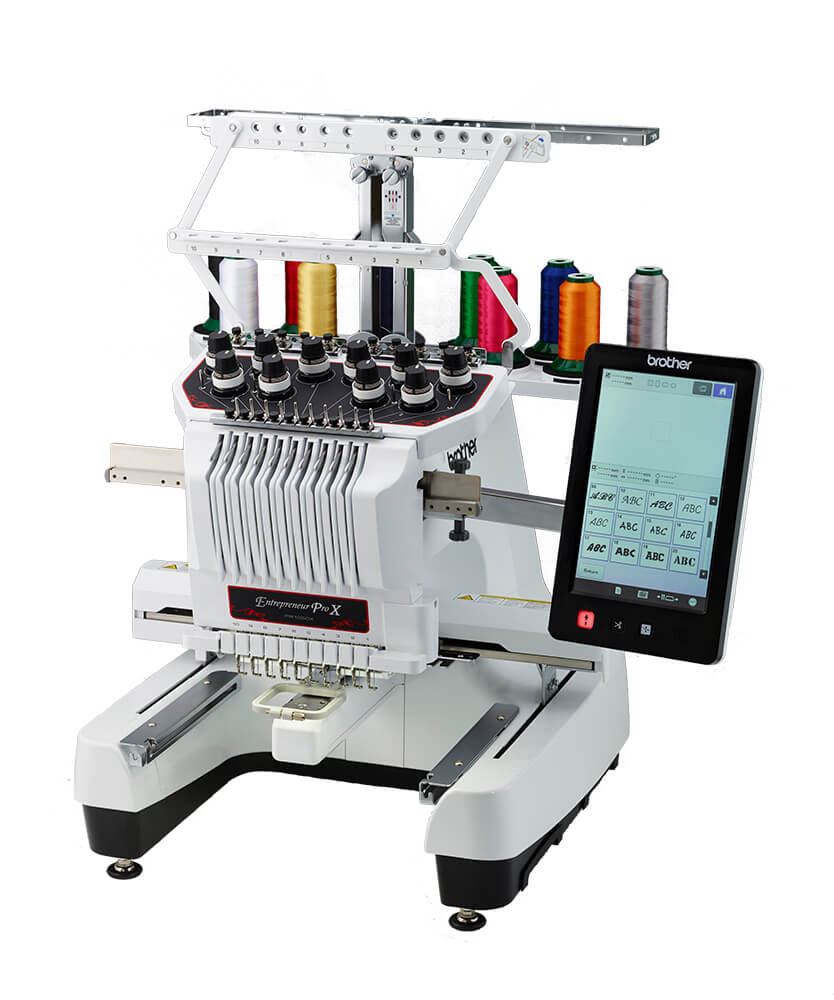Soldering iron
A soldering iron is used to melt solder, ussally a lead, tin alloy to join electronic components together.
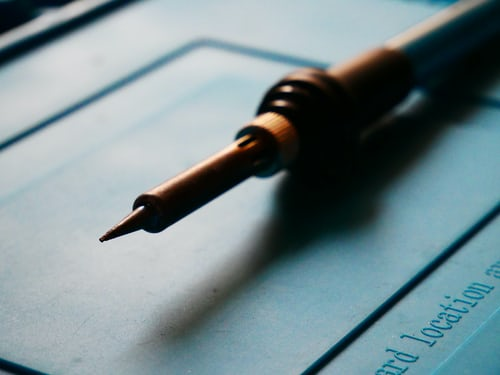Hot air station
A hot air station is used to solder surface mount components that would be difficult or impossibleto solder with a soldering iron.
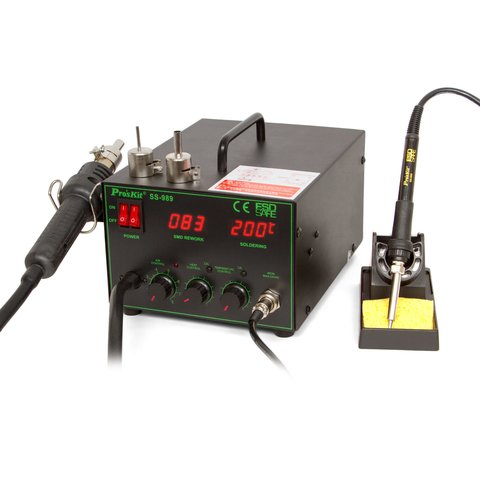3D printers
3D printing is an additive manufacturing process where thin layers of melted plastic is layered one after another to create a 3D object. The plastic material, most commonly PLA or polylactic acid is fed by the extruder into the hotend where it is melted.
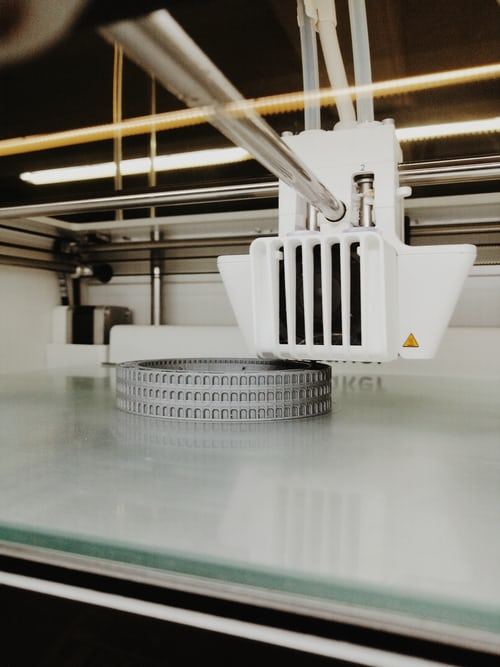Laser cutter
The laser beam is generated by a CO2 laser tube, ussally at the back of the laser. The laser beam is reflected with mirrors and is focused at the cutting head.

CNC mill
A CNC mill, or computer neumerical control mill, uses computerised controls to move an endmill to cut material.
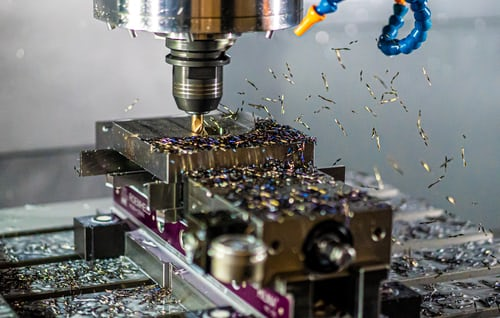